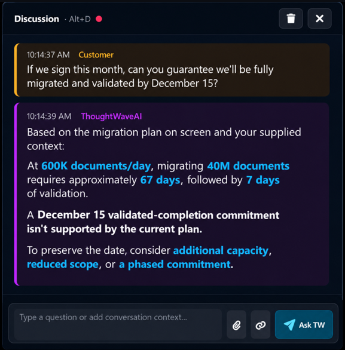

Windows x64
Installer for supported 64-bit Windows PCs.
Download ThoughtWaveAI BetaREAL-TIME CONVERSATION ASSISTANT
Get timely answers, relevant context, and helpful suggestions during meetings, interviews, demos, and classes. Stay focused on the conversation, not just the notes.
No meeting bot joins the conversation.
Real conversations, useful help
Explore how TW can assist you during conversations, whether you're learning or working.
Your professor explains backpropagation alongside a neural-network diagram.
“Backpropagation applies the chain rule to calculate how each weight contributes to the loss.”
TW Intelligence Assist connects the diagram to fraud detection: backpropagation helps the model learn from errors. Ask TW can then generate a practice question on gradient descent.
Drawing on: the ongoing lecture and the practice-question request
Understand the lecture concept while it is being taught, then test your understanding.
How it works
Open TW and start talking. You can add context beforehand if you want, but preparation is optional.

A real review screenshot will be added after it is captured from TW. No simulated product image is used.
View conversation and contextual assistance in the real application.
Real Intelligence at the Right Time.
Bring ThoughtWaveAI into the moments that matter.
Read Getting Started